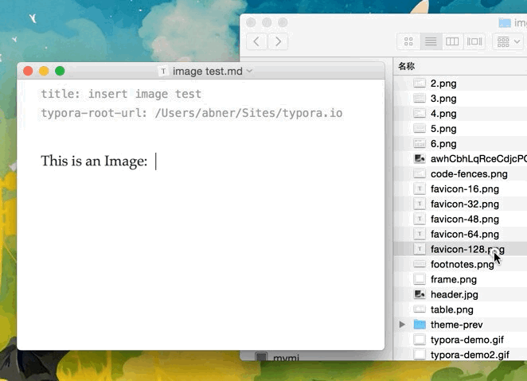

Typora 语法结构与功能¶
数学表达式¶
要启用这个功能，首先到Preference->Editor中启用。然后使用$符号包裹Tex命令，例如：$lim_{x \to \infty} \ exp(-x)=0$将产生如下的数学表达式：
limx→∞ exp(−x)=0limx→∞ exp(−x)=0
Typora支持Latex的公式编辑，公式编辑几乎和代码编辑的使用方法相同，同样分行内公式和行间公式，行内公式用两个$包裹起来，行间公式可以使用快捷键command + alt + b和$$ + enter插入：
下标¶
下标使用~包裹，例如：H~2~O将产生水的分子式。
H 2 O
H2O
上标¶
X^2^
x2
插入表情¶
使用:happy:输入高兴的表情，使用:sad:输入悲伤的表情，使用:cry:输入哭的表情等。以此类推！
:happy:
:sad:
下划线¶
用HTML的语法<u>underline</u>将产生下划线Underline.
underline
删除线¶
GFM添加了删除文本的语法，这是标准的Markdown语法木有的。使用`~~包裹的文本将会具有删除的样式，例如删除文本`将产生~删除文本~的样式。
代码¶
输入~~~或者“`然后回车，可以输入代码块，并且可以选择代码的语言。例如：
1 2 3 4 5 6 | public Class HelloWorld{ System.out.println("Hello World!"); } 123456 |
插入代码的语法和其他markdown并没有区别，同样支持行内代码和行间代码块，语法是相同的，只是在插入行间代码时可以选择快捷键command + alt + c和输入“`后按回车两种方式，效果是一样的:
右下角可以输入代码的语言，可以根据不同的语言自动高亮显示。
强调¶
1 2 | **使用两个*号强调内容** __使用两个下划线强调内容__12 |
使用两个*号强调内容 使用两个下划线强调内容
斜体¶
在标准的Markdown语法中，*和_包裹的内容会是斜体显示，但是GFM下划线一般用来分隔人名和代码变量名，因此我们推荐是用星号来包裹斜体内容。如果要显示星号，则使用转义：
1 | \*1 |
插入图片¶
这个功能和简书的拖入图片即可插入图片功能是一样的，但是这个功能默认是关闭的需要在设置中手动开启，设置的路径为:
1 | Preferences -> Editor1 |
在Image Drag & Drop后打上勾就可以了，如图所示：

插入URL连接¶
使用尖括号包裹的url将产生一个连接，例如：<www.baidu.com>将产生连接:www.baidu.com.
如果是标准的url，则会自动产生连接，例如:www.google.com
目录列表Table of Contents（TOC）¶
输入[toc]然后回车，将会产生一个目录，这个目录抽取了文章的所有标题，自动更新内容。
水平分割线¶
使用***或者---，然后回车，来产生水平分割线。
标注¶
我们可以对某一个词语进行标注。例如
1 2 | 某些人用过了才知道[^注释] [^注释]:Somebody that I used to know.12 |
把鼠标放在注释上，将会有提示内容1
表格
1 2 3 4 5 | |姓名|性别|毕业学校|工资| |:---|:---:|:---:|---:| |杨洋|男|重庆交通大学|3200| |峰哥|男|贵州大学|5000| |坑货|女|北京大学|2000|12345 |
其中代码的第二行指定对齐的方式，第一个是左对齐，第二个和第三个是居中，最后一个是右对齐。
| 姓名 | 性别 | 毕业学校 | 工资 |
|---|---|---|---|
| 杨洋 | 男 | 重庆交通大学 | 3200 |
| 峰哥 | 男 | 贵州大学 | 5000 |
| 坑货 | 女 | 北京大学 | 2000 |
使用快捷键ctrl+T可以快速插入表格，最上面可以选择行列数、没一列的对齐方式，并且支持在表格中使用tab键跳到下一单元格。
数学表达式块¶
输入两个美元符号，然后回车，就可以输入数学表达式块了。例如：
1 | $$\mathbf{V}_1 \times \mathbf{V}_2 = \begin{vmatrix} \mathbf{i} & \mathbf{j} & \mathbf{k} \\\frac{\partial X}{\partial u} & \frac{\partial Y}{\partial u} & 0 \\\frac{\partial X}{\partial v} & \frac{\partial Y}{\partial v} & 0 \\\end{vmatrix}$$1
|
任务列表¶
1 2 3 | - [ ] 吃饭 - [ ] 逛街 - [ ] 看电影123 |
-
吃饭
-
逛街
-
看电影
列表¶
输入+, -, *,创建无序的列表，使用任意数字开头，创建有序列表，例如：
1 2 3 4 | **无序的列表** * LOL * ??? * 1234 |
- LOL
- ???
- 1234
块引用¶
使用>来插入块引用。例如：
这是一个块引用！
标题¶
使用#表示一级标题，##表示二级标题，以此类推，有6个标题。
Ctrl+{1,2,3,4,5,6}
-
能看到我吗 ↩